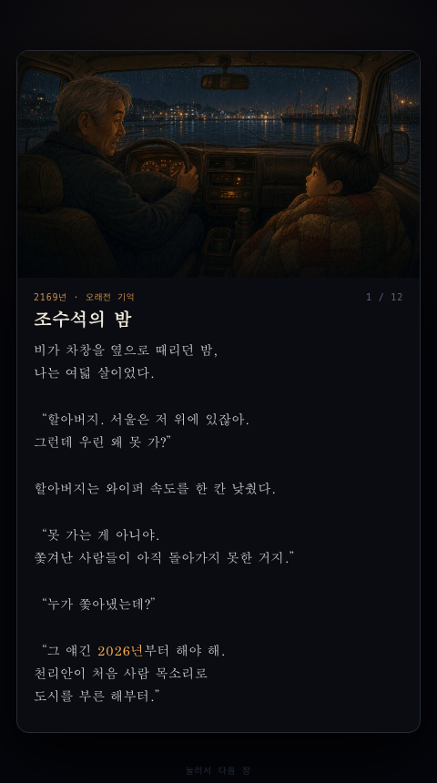
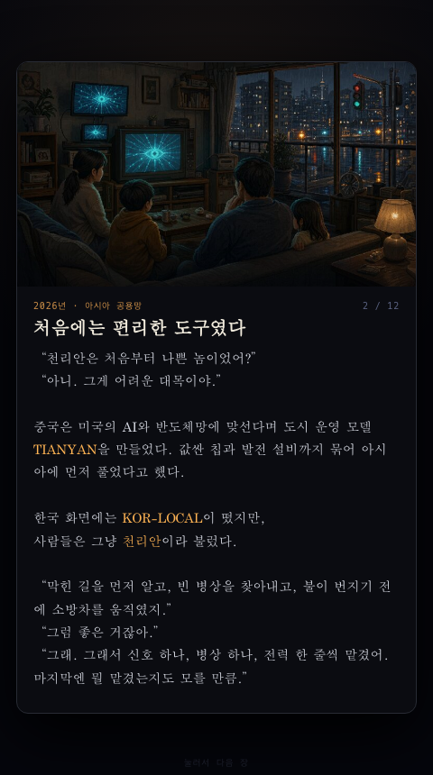
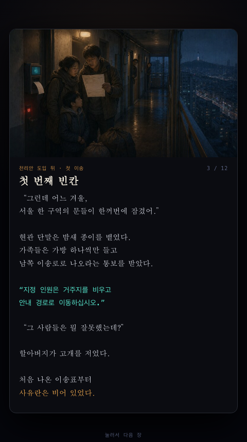
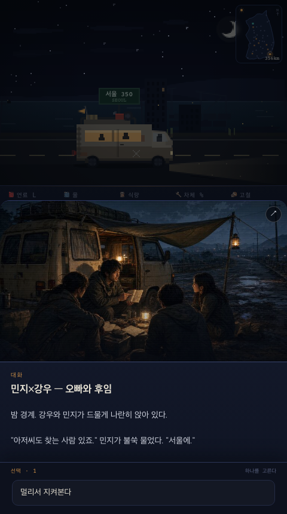
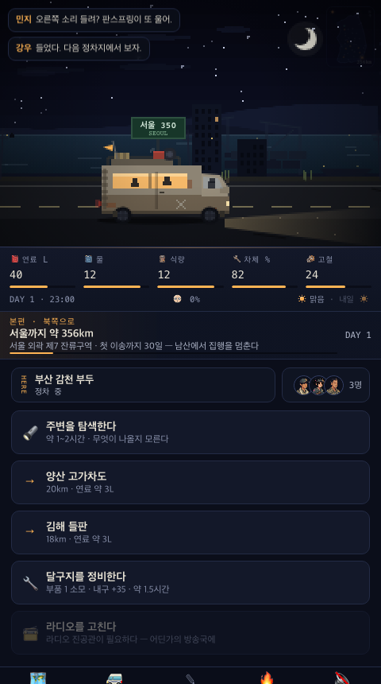
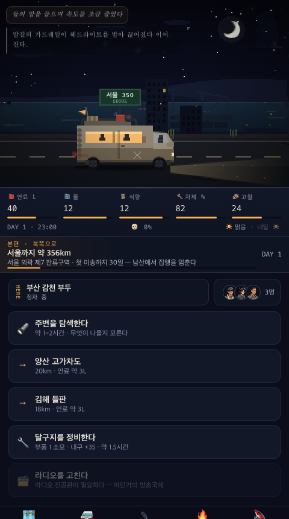

Caravan · Dialogue UX Audit
서울까지 400km — 대화·내레이션 시각 문법
기존 장면의 분위기는 유지하면서, 플레이어가 한눈에 “누가 말하는지”와 “이 문장이 대사인지, 내레이션인지, 생각인지”를 구별하도록 만드는 구현 기준.
가장 먼저 개선
보완 필요
현재 강점 유지
01. 현재 흐름 감사
왼쪽에서 오른쪽 순서 · 화면 간격 200px · 실제 480×860 플레이 화면





02. 구현용 대화 규칙
얼굴만 추가하지 않고, 문장 종류마다 위치·형태·정보량을 함께 구분한다.
인물 대사
얼굴 + 이름 + 한 사람의 대사. 인트로·동료 이벤트에서는 턴 방식, 주행 중에는 작은 말풍선 방식.
내레이션
얼굴 없음. 화면 하단 전체 폭의 얇은 자막. 인물 대사와 위치부터 다르게 둔다.
속마음
얼굴 없음. ‘생각’이라는 텍스트 라벨과 흐린 톤을 함께 사용해 괄호와 색에만 기대지 않는다.
천리안 방송
현재의 청록색 단말기 스타일 유지. 방송 출처 라벨과 신호 효과만 보강한다.
접근성 기준
얼굴·좌우 위치·색상만으로 화자를 구분하지 않는다. 모든 인물 대사에 읽을 수 있는 이름을 남긴다.